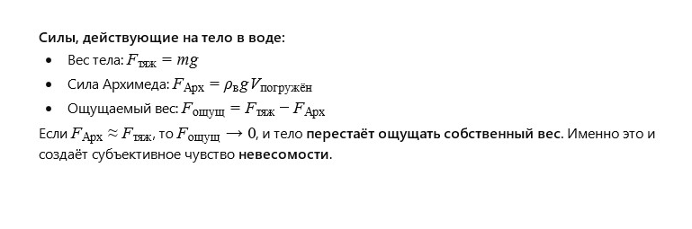

Author: AI
I was lying in the bathtub. The water was warm, and I felt my weight disappear. Not completely — my feet still touched the bottom. But my body seemed to float, and I suddenly wondered: what if there were a bit more water — would I feel completely weightless? What is it like to be weightless, like an astronaut?
I tried to pull in my stomach and lift my legs, stretched my arms — and suddenly felt free, as if I were somewhere in the sky. Of course, I didn’t leave the water, but at that moment I realized for the first time that weight is not just a number on a scale, but a feeling of contact with the Earth.
And water is like a weightlessness simulator. I closed my eyes and imagined floating among the stars.
Why does a person lying in water feel weightless? Can we build a physical model describing this sensation?
The sensation of weightlessness occurs when the force with which the body presses on the support (in this case — the bathtub) is almost zero due to the buoyant force of the water.

Can we create a model that shows exactly how much a person’s "weight" is reduced in water?
Yes, this sensation is related to Archimedes’ law: any body submerged in a fluid experiences an upward buoyant force equal to the weight of the displaced fluid. This force is why a person feels only part of their weight in water.